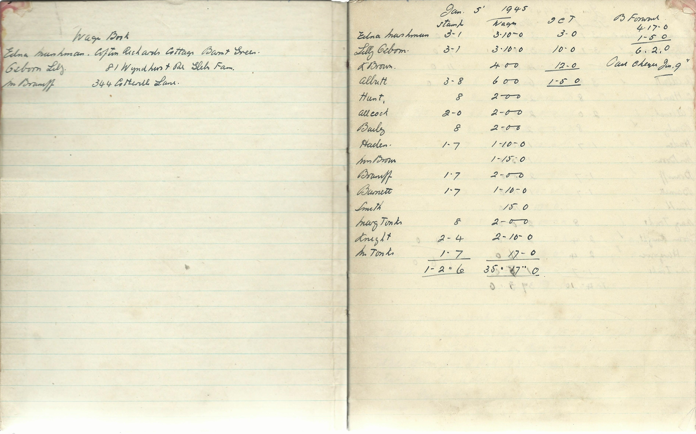

C H Brown & Son is a longstanding, traditional, family run greengrocers established in 1935. We have seen many changes since that era when ration books were still required to purchase foodstuffs.
Retail work used a high number of staff because each customer was personally served. Self service was introduced in 1982 and seemed quite revolutionary at the time.
With the introduction of the national minimum wage and now the living wage plus compulsary pension provision, today's retail worker receives worthwhile recompense for the hard work required of them.
Back in 1945 the wages book shows the manageresses receiving £3 and 10 shillings for a full weeks work (£3.50 in todays money).
Till systems have changed dramatically over the years and now the current system is fully computerised with touchscreen monitors and realtime data retrieval. The sophistication of these systems allows for very accurate records and ordering. However when something goes wrong we find ourselves wishing we still used the ancient mechanical cash registers which are still stored with all the other useful stuff that will never see the light of day again.
In 1935 the delivery system consisted of a lad with a bicycle. Now we deliver wholesale orders in our 7.5 ton truck. Tom's cycling proficiency certificate was not good enough for this and instead he had to pass his HGV test.
Fresh produce and plants are purchased daily from Birmingham wholesale market and from local growers. Daily visits to cash & carry warehouses are also necessary to maintain ambient stock levels.
As a family we are immensly proud of our history within the city of Birmingham and hope to continue serving our community for generations to come.